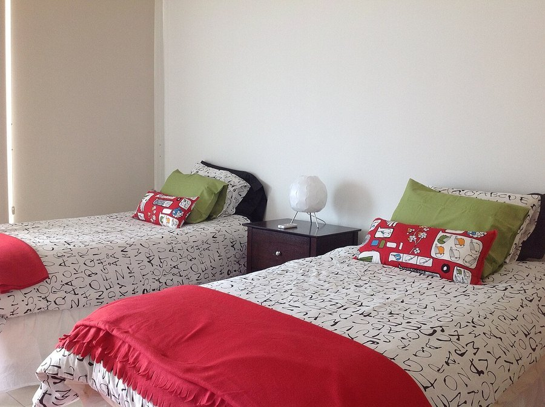

Sleep and Testosterone: How Rest Affects Your Hormones
Testosterone isn't just made by the testes. It's made on a schedule your sleep sets. Here's how the two are connected, and what the research actually shows about fixing one to help the other.

Key takeaways
- Most testosterone release happens during sleep, especially in the deeper stages overnight.
- Cutting sleep to around 5 hours a night for just a week measurably lowered testosterone in a well-known clinical study.
- Sleep apnea is a frequent, treatable cause of low testosterone in men who otherwise seem to sleep enough hours.
- Sleep isn't the only input: age, body weight and certain medications all affect testosterone too.
- Consistent 7-9 hour sleep is one of the few testosterone habits with real evidence behind it, no supplement required.
Short answer: yes, sleep and testosterone are directly linked. Testosterone is released mainly during sleep, and cutting sleep short, even for just a week, has been shown to measurably lower levels in healthy men. Chronic short sleep is associated with lower testosterone over time, while consistent 7-9 hour sleep supports normal production without any pills or supplements involved.
That's the headline. The more useful version explains how much a bad night actually costs you, which sleep problems matter most, and what's worth doing about it before reaching for a testosterone test.
How does sleep affect testosterone levels?
Testosterone follows a daily rhythm. Levels are highest in the early morning and decline through the day, and that morning peak depends heavily on sleep. Most of the day's testosterone release happens during the night, concentrated in the deeper, more restorative stages of sleep rather than spread evenly across the hours in bed. Interrupt or shorten that sleep and you interrupt the window where the body does most of its hormone production. This is part of why testosterone testing is usually done in the morning, and why sleep quality, not just sleep quantity, matters for the result.
How much testosterone can one bad night actually cost you?
A single rough night rarely moves the needle much. The research that gets cited most often is a small but well-designed study from the University of Chicago, published in JAMA, in which healthy young men slept under 5 hours a night for a week straight. Daytime testosterone dropped by roughly 10 to 15 percent, with the biggest declines in the afternoon and evening. The study's authors compared the size of that drop to the kind of decline you'd otherwise expect from a decade or more of aging. It was a small sample of lean, healthy men in their twenties, so it doesn't prove the same drop happens to everyone, but it's one of the clearest demonstrations that sleep debt has a hormonal cost, not just a mood one.
Other studies point the same direction with softer numbers. A large cross-sectional analysis found that for men sleeping less than the group average, each additional hour of lost sleep was associated with roughly a 1 to 2 percent lower testosterone reading, real but modest, and still within a normal range for most men. Total, overnight sleep deprivation produces a sharper short-term dip than partial restriction, though it also recovers faster once normal sleep resumes. Not every study agrees on the size of the effect, and a few have found no significant change under milder sleep restriction, which is a reminder that individual response varies.
| Sleep pattern | What research generally shows |
|---|---|
| 7-9 hours, consistent | Associated with normal, stable testosterone rhythm |
| One short night (5-6 hours) | Usually a small, short-lived dip; rarely significant alone |
| ~5 hours/night for a week | Measurable drop (roughly 10-15%) in one well-cited clinical study |
| Chronic short sleep (months+) | Linked to lower average levels; hard to separate from age, weight, stress |
| Untreated sleep apnea | Associated with lower testosterone independent of total hours in bed |
What happens with chronic, ongoing sleep deprivation?
Chronic short sleep is the pattern that matters most for long-term hormone health, not the occasional late night. Men who consistently sleep less than about 6 hours tend to show lower average testosterone than men who sleep 7 to 9, in observational research. The honest caveat is that this kind of study can't fully separate sleep from the things that often travel with it: higher stress, more body fat, less exercise, heavier alcohol use, all of which independently affect testosterone. Sleep is very likely a real, contributing cause, but it's rarely the only one, which is worth remembering before blaming testosterone entirely on a few weeks of bad sleep.
Does sleep apnea lower testosterone specifically?
Yes, and this is one of the more actionable links in this whole picture. Obstructive sleep apnea repeatedly interrupts deep sleep and drops blood oxygen through the night, even in men who technically spend 7-8 hours in bed. Multiple studies associate untreated apnea with lower testosterone, independent of total sleep time. The practical upside is that apnea is treatable, with a CPAP machine, weight loss, or other interventions, and some men see testosterone improve once it's properly managed. Loud snoring, witnessed pauses in breathing, or waking up gasping are worth mentioning to a doctor regardless of testosterone, since apnea also carries its own cardiovascular risks.
Can sleeping too much lower testosterone too?
There's less evidence here, and what exists is mixed. Oversleeping is sometimes a symptom rather than a cause: depression, certain medications, and some sleep disorders can both increase time in bed and independently affect hormones. A handful of studies have found lower testosterone associated with unusually long sleep (think 9-10+ hours), but the research doesn't clearly show oversleeping itself drives the drop the way sleep restriction does. If you're consistently sleeping far more than you need and still feel exhausted, that pattern is worth raising with a doctor on its own merits.
What else affects testosterone besides sleep?
Sleep is one lever among several, and it's easy to overcredit or undercredit it depending on which article you read. Age is the biggest factor: testosterone declines gradually, often by around 1 to 2 percent a year after the 30s, which is a normal part of aging rather than a disorder on its own. See our guide to testosterone levels by age for what counts as normal at different stages. Body composition matters too; excess body fat, particularly around the midsection, is linked to lower testosterone, which is part of why belly fat in men over 40 and hormone health are so often discussed together. Chronic stress, heavy alcohol use, certain medications (including some antidepressants and opioids), and underlying conditions like diabetes can all lower levels independent of sleep.
How can you sleep better to support healthy testosterone?
None of this requires anything exotic. The habits with the best evidence are also the simplest.
- Protect a consistent 7-9 hour sleep window, including on weekends.
- Keep a regular wake time; it anchors the body's hormone rhythm more than bedtime does.
- Get evaluated for sleep apnea if you snore heavily, wake up gasping, or feel unrefreshed despite enough hours in bed.
- Limit alcohol in the hours before bed, since it fragments deep sleep even when it helps you fall asleep faster.
- Keep the bedroom dark, cool and quiet, and keep a consistent pre-sleep routine.
- Treat daytime fatigue as a signal worth investigating, not just something to push through with caffeine.
Will fixing my sleep alone restore normal testosterone?
Sometimes, but not always, and it's worth being honest about that instead of overselling sleep as a cure-all. If poor sleep is the main or only driver, especially untreated apnea, improving it can meaningfully raise testosterone. If low testosterone is mainly driven by age, a medical condition, certain medications or significant excess weight, better sleep will likely help a little without fully normalizing levels on its own. It's a genuinely useful, low-risk first step either way, since good sleep has benefits far beyond one hormone, but it isn't a guaranteed fix for every case of low testosterone.
When should you see a doctor about low testosterone and sleep?
Bring it up if you notice persistent low energy, reduced motivation, low libido, or difficulty concentrating alongside poor sleep, especially if lifestyle changes haven't helped after a few weeks. A doctor can order a morning blood test (timing matters, given the daily rhythm described above), screen for sleep apnea, and rule out other causes like thyroid issues or medication side effects. Routine checkups are also a good place to raise it even without dramatic symptoms. Our guide to men's health checkups by age covers what's worth asking about and when. Testosterone replacement therapy is a decision for a doctor, not a DIY project, and it works best once other contributing issues, sleep included, have been addressed.
Sleep quality affects more than hormones, too. Short, fragmented sleep is also one of the clearest, most consistent drivers of next-day brain fog and poor recall — if that sounds familiar, our piece on napping and memory covers how sleep debt affects thinking, and what a nap can and can't fix.
Frequently asked questions
Can poor sleep cause low testosterone?
Yes, for many men. Testosterone is produced mainly during sleep, and research has repeatedly linked short or fragmented sleep to lower daytime levels. A single bad night rarely matters much, but a sustained pattern of short sleep is one of the more reversible causes of low testosterone.
How many hours of sleep do you need for healthy testosterone?
Most research on testosterone and sleep uses 7 to 9 hours as the healthy baseline, which also matches general sleep guidelines for adults. Studies that restrict sleep below about 5 hours a night consistently find lower testosterone within days.
Can you reverse low testosterone just by sleeping more?
Sometimes, if poor sleep is the main driver. Men whose short sleep is caused by undiagnosed sleep apnea often see the biggest gains once it's treated. But testosterone has many other inputs, so sleep alone won't fix levels driven by age, body weight, medications or an underlying medical condition.
Does napping help testosterone if nighttime sleep is short?
A nap can ease next-day fatigue, but it doesn't replace the deep, consolidated overnight sleep where most testosterone release happens. Napping is a reasonable stopgap on an occasional short night, not a long-term substitute for a full night's sleep.
What are the signs low testosterone is linked to sleep?
Low morning energy, reduced motivation, lower libido and trouble concentrating can all overlap with both poor sleep and low testosterone, which makes self-diagnosis unreliable. Snoring, gasping during sleep, or a partner noticing pauses in breathing point more specifically toward sleep apnea as a cause worth ruling out.
Does working night shifts lower testosterone?
Shift work that disrupts normal sleep timing and duration is associated with lower testosterone in several studies, likely through the same short-sleep and circadian-disruption pathways. Protecting sleep quality and keeping a consistent sleep window, even on an irregular schedule, appears to help.
Is testosterone replacement therapy a shortcut around fixing sleep?
No. Testosterone replacement therapy treats the hormone level, not the sleep problem causing it, and it carries its own risks and monitoring requirements. Doctors typically want sleep disorders like apnea addressed first, partly because untreated apnea can make TRT less effective and riskier.
Related: Testosterone levels by age · Belly fat in men over 40 · Men's health checkups by age · Does napping improve memory?
Image: Juanejacome / Wikimedia Commons / CC BY-SA 3.0